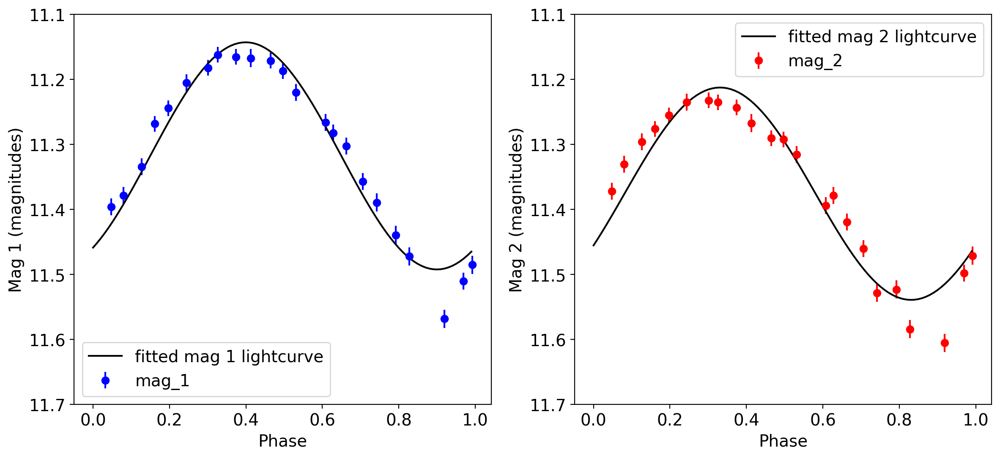
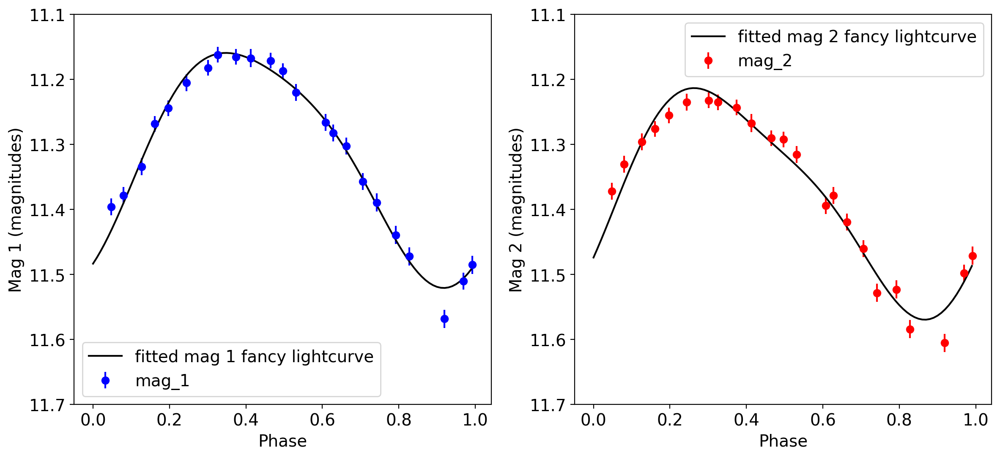

%config InlineBackend.figure_format = 'retina'
%matplotlib inline
import pandas as pd
import matplotlib.pyplot as plt
from scipy.optimize import curve_fit
import numpy as np
plt.rcParams.update({'font.size':14})
Solution: Fitting lightcurves#
lc_df = pd.read_csv('./data/HV00872_phot.csv')
lc_df
| phase | mag_1 | err_mag_1 | mag_2 | err_mag_2 | |
|---|---|---|---|---|---|
| 0 | 0.919 | 11.568 | 0.013 | 11.605 | 0.014 |
| 1 | 0.969 | 11.510 | 0.013 | 11.498 | 0.013 |
| 2 | 0.992 | 11.485 | 0.012 | 11.471 | 0.014 |
| 3 | 0.048 | 11.396 | 0.013 | 11.372 | 0.013 |
| 4 | 0.080 | 11.378 | 0.012 | 11.330 | 0.013 |
| 5 | 0.127 | 11.334 | 0.011 | 11.296 | 0.013 |
| 6 | 0.161 | 11.268 | 0.011 | 11.276 | 0.012 |
| 7 | 0.197 | 11.244 | 0.012 | 11.255 | 0.012 |
| 8 | 0.244 | 11.205 | 0.011 | 11.235 | 0.013 |
| 9 | 0.301 | 11.182 | 0.011 | 11.232 | 0.012 |
| 10 | 0.326 | 11.162 | 0.011 | 11.235 | 0.012 |
| 11 | 0.374 | 11.165 | 0.011 | 11.243 | 0.012 |
| 12 | 0.413 | 11.167 | 0.011 | 11.267 | 0.014 |
| 13 | 0.465 | 11.171 | 0.011 | 11.290 | 0.012 |
| 14 | 0.497 | 11.187 | 0.011 | 11.292 | 0.012 |
| 15 | 0.531 | 11.220 | 0.011 | 11.315 | 0.013 |
| 16 | 0.608 | 11.266 | 0.011 | 11.394 | 0.013 |
| 17 | 0.628 | 11.282 | 0.011 | 11.378 | 0.013 |
| 18 | 0.663 | 11.302 | 0.011 | 11.419 | 0.013 |
| 19 | 0.706 | 11.357 | 0.012 | 11.460 | 0.013 |
| 20 | 0.742 | 11.389 | 0.012 | 11.528 | 0.014 |
| 21 | 0.792 | 11.439 | 0.012 | 11.523 | 0.014 |
| 22 | 0.828 | 11.472 | 0.012 | 11.584 | 0.014 |
def lightcurve(phase, m0, A, delta):
m = m0 + A*np.sin(2*np.pi*phase + delta)
return(m)
popt_1, pcov_1 = curve_fit(lightcurve,lc_df['phase'], lc_df['mag_1'])
popt_1
array([11.31741618, 0.17472253, 2.20152525])
pcov_1
array([[3.20492060e-05, 2.58295639e-06, 2.91783750e-06],
[2.58295639e-06, 6.82718478e-05, 5.78559829e-06],
[2.91783750e-06, 5.78559829e-06, 1.97336084e-03]])
m0_1 = popt_1[0]
A_1 = popt_1[1]
delta_1 = popt_1[2]
err_m0_1 = np.sqrt(pcov_1[0][0])
err_A_1 = np.sqrt(float(pcov_1[1][1]))
err_delta_1 = np.sqrt(float(pcov_1[2][2]))
fig = plt.figure(figsize=(10,6))
ax = fig.add_subplot(1,1,1)
ax.errorbar(lc_df['phase'], lc_df['mag_1'], yerr=lc_df['err_mag_2'],color='b', marker='o', linestyle='None', label='mag_1')
ax.set_xlabel('Phase')
ax.set_ylabel('Mag 1 (magnitudes)')
p = np.arange(0,1,0.01)
ax.plot(p, lightcurve(p, m0_1, A_1, delta_1), ls='-', color='k', label='fitted lightcurve')
ax.legend()
<matplotlib.legend.Legend at 0x113d506d0>
popt_2, pcov_2 = curve_fit(lightcurve,lc_df['phase'], lc_df['mag_2'])
m0_2 = popt_2[0]
A_2 = popt_2[1]
delta_2 = popt_2[2]
err_m0_2 = np.sqrt(pcov_2[0][0])
err_A_2 = np.sqrt(float(pcov_2[1][1]))
err_delta_2 = np.sqrt(float(pcov_2[2][2]))
fig = plt.figure(figsize=(10,6))
ax = fig.add_subplot(1,1,1)
ax.errorbar(lc_df['phase'], lc_df['mag_2'], yerr=lc_df['err_mag_2'], color='r', marker='o', linestyle='None', label='mag_2')
ax.set_xlabel('Phase')
ax.set_ylabel('Mag 2 (magnitudes)')
p = np.arange(0,1,0.01)
ax.plot(p, lightcurve(p, m0_2, A_2, delta_2), ls='-', color='k', label='fitted lightcurve')
ax.legend()
<matplotlib.legend.Legend at 0x113e9b7f0>
putting them together on the same plot:
fig = plt.figure(figsize=(14,6))
p = np.arange(0,1,0.01)
ax1 = fig.add_subplot(1,2,1)
ax1.errorbar(lc_df['phase'], lc_df['mag_1'], yerr=lc_df['err_mag_2'],color='b', marker='o', linestyle='None', label='mag_1')
ax1.set_xlabel('Phase')
ax1.set_ylabel('Mag 1 (magnitudes)')
ax1.plot(p, lightcurve(p, m0_1, A_1, delta_1), ls='-', color='k', label='fitted mag 1 lightcurve')
ax1.legend()
ax2 = fig.add_subplot(1,2,2)
ax2.errorbar(lc_df['phase'], lc_df['mag_2'], yerr=lc_df['err_mag_2'], color='r', marker='o', linestyle='None', label='mag_2')
ax2.set_xlabel('Phase')
ax2.set_ylabel('Mag 2 (magnitudes)')
ax2.plot(p, lightcurve(p, m0_2, A_2, delta_2), ls='-', color='k', label='fitted mag 2 lightcurve')
ax2.legend()
ax1.invert_yaxis()
ax2.invert_yaxis()
ax1.set_ylim(11.7, 11.1)
ax2.set_ylim(11.7, 11.1)
plt.show();

can extend this to get a better fit. Add additional terms (Fourier series)
new function to fit:
\[m = m_0 + A \sin\left(2 \pi \phi + \delta\right) + B \sin\left(4 \pi \phi + \delta\right) \]
def fancy_lightcurve(phase, m0, A, B, delta):
m = m0 + A*np.sin(2*np.pi*phase + delta) + B*np.sin(4*np.pi*phase + delta)
return(m)
popt_1_fancy, pcov_1_fancy = curve_fit(fancy_lightcurve,lc_df['phase'], lc_df['mag_1'])
m0_1_f = popt_1_fancy[0]
A_1_f = popt_1_fancy[1]
B_1_f = popt_1_fancy[2]
delta_1_f = popt_1_fancy[3]
popt_2_fancy, pcov_2_fancy = curve_fit(fancy_lightcurve,lc_df['phase'], lc_df['mag_2'])
m0_2_f = popt_2_fancy[0]
A_2_f = popt_2_fancy[1]
B_2_f = popt_2_fancy[2]
delta_2_f = popt_2_fancy[3]
fig = plt.figure(figsize=(14,6))
p = np.arange(0,1,0.01)
ax1 = fig.add_subplot(1,2,1)
ax1.errorbar(lc_df['phase'], lc_df['mag_1'], yerr=lc_df['err_mag_2'],color='b', marker='o', linestyle='None', label='mag_1')
ax1.set_xlabel('Phase')
ax1.set_ylabel('Mag 1 (magnitudes)')
ax1.plot(p, fancy_lightcurve(p, m0_1_f, A_1_f, B_1_f, delta_1_f), ls='-', color='k', label='fitted mag 1 fancy lightcurve')
ax1.legend()
ax2 = fig.add_subplot(1,2,2)
ax2.errorbar(lc_df['phase'], lc_df['mag_2'], yerr=lc_df['err_mag_2'], color='r', marker='o', linestyle='None', label='mag_2')
ax2.set_xlabel('Phase')
ax2.set_ylabel('Mag 2 (magnitudes)')
ax2.plot(p, fancy_lightcurve(p, m0_2_f, A_2_f, B_2_f, delta_2_f), ls='-', color='k', label='fitted mag 2 fancy lightcurve')
ax2.legend()
ax1.invert_yaxis()
ax2.invert_yaxis()
ax1.set_ylim(11.7, 11.1)
ax2.set_ylim(11.7, 11.1)
plt.show();
